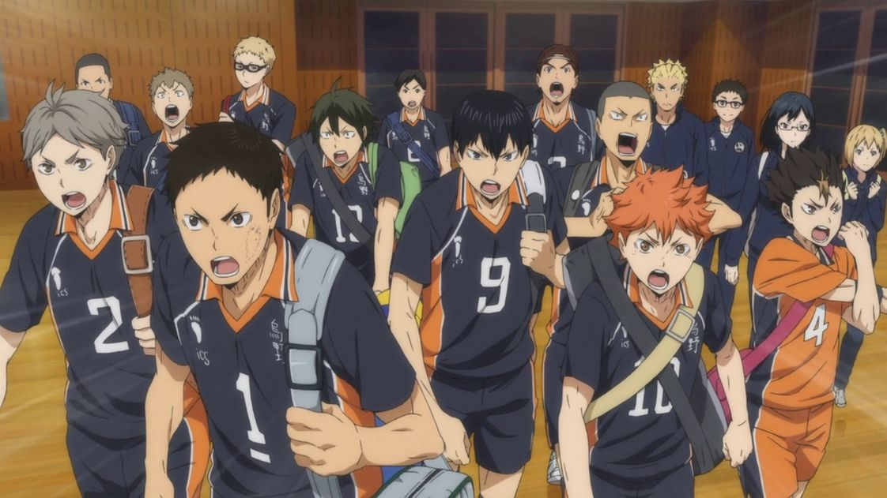
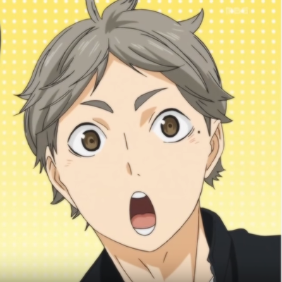
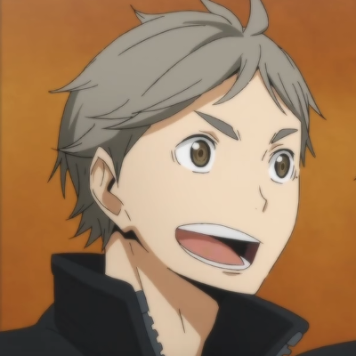

Karasuno Club de volley-ball
Le lycée Karasuno est un lycée situé dans la préfecture de Miyagi. Après de nombreuses années, ce club a remonté la pente et est redevenu représentant de la préfecture de Miyagi! Rejoignez-nous!

Les membres
Le club possède 12 joueurs, de la seconde à la terminale, dont la formation principale se constitue de: Daichi Sawamura, Koshi Sugawara, Asahi Azumane, Yu Nishinoya, Ryunosuke Tanaka, Tobio Kageyama, Shoyo Hinata et Kei Tsukishima.

Supervision
Le club est supervisé par des personnes motivés, dont le fils de l'ancien entraîneur du club qui le mena aux nationales: Keishin Ukai.

Diversité
Le club possède aussi une équipe féminine! Evidemment, ce sport est fait pour tout le monde.